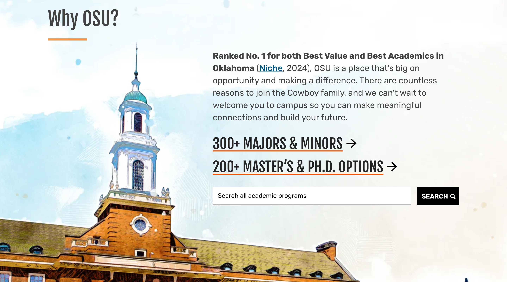
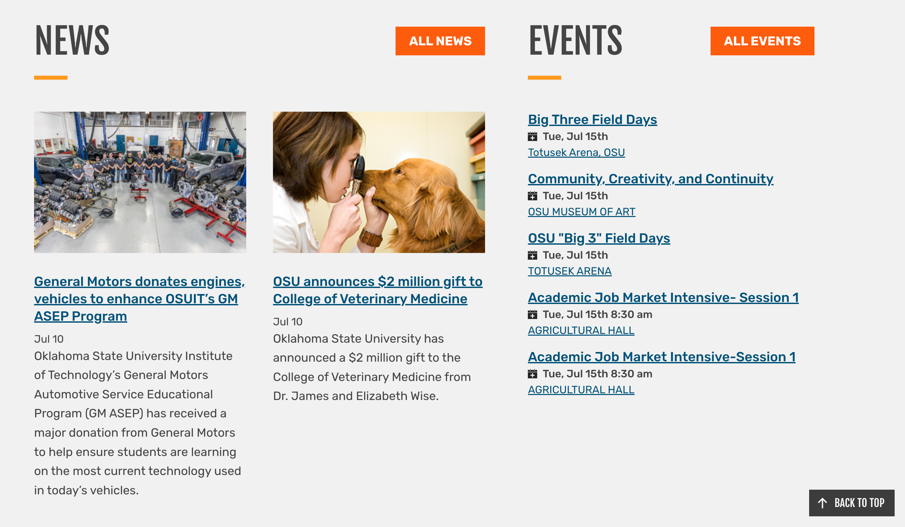
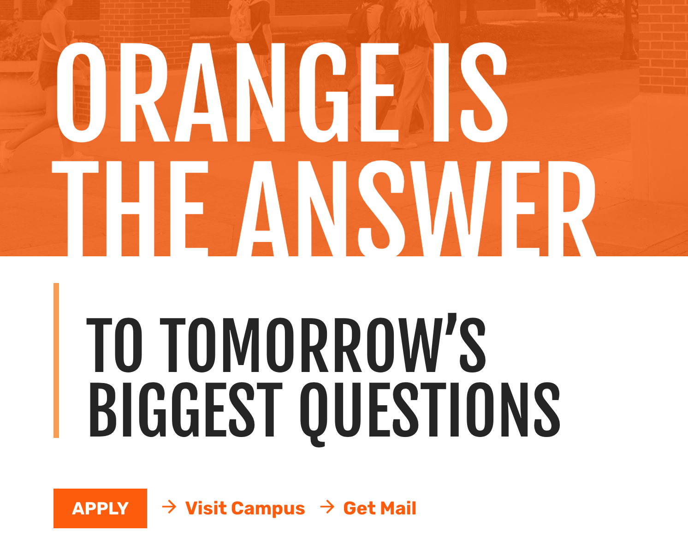

For this assignment I am choosing to analyze my alma mater's (Oklahoma State University) homepage. After spending four years as an undergraduate student at this university, I can say very confidently that I was a frequent visitor to this site and am quite familiar with it.
The website in question appears to immediately put an emphasis on bold headers while effectively choosing colors for the font that contrast with the background color. I feel as if this creates a strong visual hierarchy and clearly sets the tone for the rest of the website. The biggest examples are where it says, "Why OSU?" and "Life on Campus" in bold black lettering on a light blue/white colored background.
Although the web page is pretty consistent when it comes to layout, the action buttons, or hyper links, specifically ones like the "Apply Now" option do n ot contrast as much. They lack that clear distinction as they just blend in with the color scheme of the paghe rather than popping off the page, muchh like the previous examples.
If there is one thing this website does exceptionally well, it is repitition. The design patterns are consistent throughout the site, as both the font style and color stays ther same from start to end. There is a "Life on Campus" section which is repetitive in its content structure in the way that there are four video hyperlinks which are the same size. They also have the question bold underneath the video with a secondary question underneath that one.
However, there are some areas where the consistency department falls behind, and could have a stronger empahsis put into it. The "We are all Cowboys" section could use a little bit of help. The two sections directly underneath both contain a subheading and some introductory information as well as a hyperlink. This specific section only contains a hyperlink, although the style of the section matches, the repitive nature of the site lacks in this area.

The layout of the website, mucb like the state of Oklahoma, follows a centered and grid-based structured alignment. The site also relies heavily on the usage of vertical collums to help align both the headers and text blocks as a whole. Text also appears to be left aligned throughout the site no matter if the information as a whole is centered or not. Spacing appears to be even throughout, although, there are some portions that might not be as evenly spaced I believe.
Proximity is not a problem with this site. Related content appears to be layed out effeciently and effectively. Statistics are laid out very clearly under the "Why OSU" section and there are multiple links to videos found connecting every day campus life activities under the "Life on Campus" section. The very clear and consistent proximity of grouped material makes the website very easy to navigate and read as an consumer.
Each section appears to be strategically placed from top to bottom based on what the consumer would be searching for first. Most users of this site are looking to apply and attempting to find basic information, hence that information being found at the top of the page. On the other hand, current students and faculty would be looking for current events and news, hence the placement at the bottom with all of the other helpful links for people already involved with the university.
